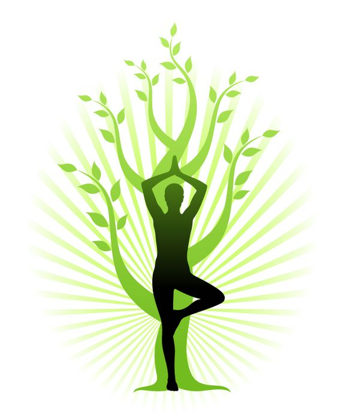
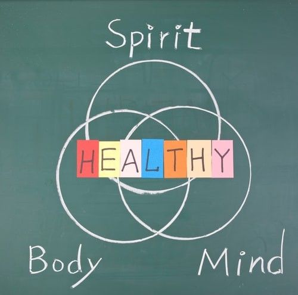

ჯანმრთელი ცხოვრება მხოლოდ შენს ხელშია,
იყავი ჯანმრთელი ჯანსაღი ცხოვრების წესების დაცვით.
ჯანსაღი ცხოვრება,ვარჯიში, სწორი კვება ...
ალბათ ეს ფრაზები ხშირად გსმენიათ,
რადგან XXI-საუკუნეში დიდი აქტუალურობით სარგებლობს.
მოდით მარტივად განვიხილოთ,
თუ რა არის ჯანსაღი ცხოვრების წესი,როგორ ვიცხოვროთ ჯანსაღად
და მოიცავს, თუ არა იგი მხოლოდ ფიზიკურ აქტივობასა
და ჯანსაღ საკვებს.

ჯანმრთელი ცხოვრებისთვის ჯანსაღი საკვები პროდუქტები და ფიზიკური აქტივობა
აუცილებელია.ჯანსაღი საკვები და ვარჯიში სასარგებლოა ჩვენი ორგანიზმისათვის.
ისინი იცავენ ორგანიზმს ნაადრევი დაბერებისგან,სხვადასხვა ქრონიკული
დაავადედებებისგან,ჭარბი/ნაკლები წონისგან და სხვა.
ჩემი აზრით უპირველეს ყოვლისა ჯანსაღი ცხოვრების წესი გვეხმარება
შევიქმნათ ჰარმონია .გარდა იმისა ,რომ ვივარჯიშოთ,სწორად ვიკვებოთ ,
დავიცვათ ჰიგიენა და აშ. თუ ჩვენ არ გვაქვს ფსიქოლოგიური მზაობა ,
ჩვენ ვერ ვიცხოვრებთ ჯანსაღად. მაგ: თუ ჩვენ გვაქვს სტრესი,დეპრესია ,
ან უბრალოდ გვაწუხებს გადაღლილობა,ეს ჩვენს ნერვულ სისტემაზე აისახება.
ეს ყველაფერი კი დიდ ზეგავლენას ახდენს,როგორც ჩვენს ხასიათზე ,
ასევე ჩვენს ქმედებებზეც. ასე რომ,მასზე (ჯანმრთელობაზე)ზრუნვა
იქამდე უნდა დავიწყოთ ,სანამ პრობლემა იჩენს თავს.

ჯანმრთელობას ჯანდაცვის მსოფლიო ორგანიზაცია ,შემდეგნაირად განგვიმარტავს:
ჯანმრთელობა- არის ადამიანის "სრული ფიზიკური,გონებრივი და სოციალური კეთილდღეობის მდგომარეობა."

ჯანსაღი ცხოვრებისა და ჰარმონიისთვის როგორც ვხედავთ ძალიან მნიშვნელოვანია სწორი კვება და ფიზიკური აქტივობა, ამასთანავე ,მნიშვნელოვანია განტვირთვა. XXI-საუკუნეში ასევე დიდი პოპულარობით სარგებლობს მედიტაციაც.მედიტაცია განტვირთვის ერთ-ერთი ძალიან კარგი ,სწრაფი და მარტივი მეთოდია.ასევე ზალიან კარგია ბუნებაში ყოფნა ,სერინობა .
ასევე ვფიქრობ,რომ ყველაფერი ის რაც სიამოვნებას განიჭებთ და თქვენთვის კომფორტულია,ყველაფერი ეს დაგეხმარებათ განტვირთვაში.